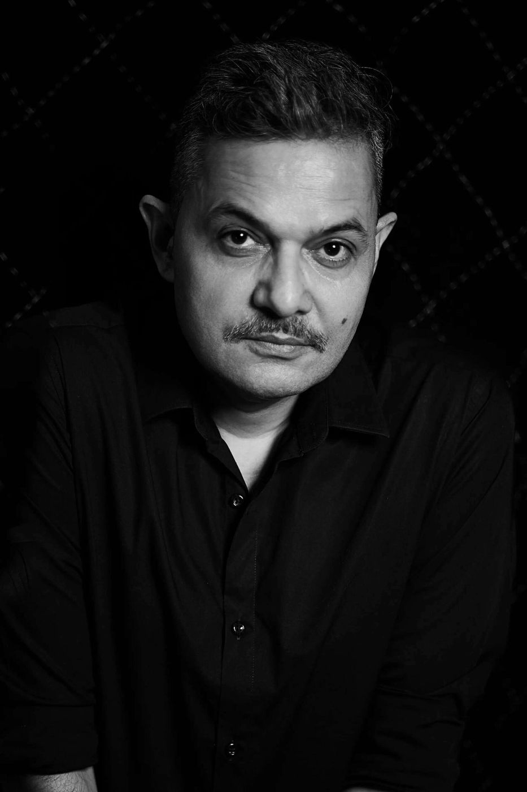

A life,
told slowly
In six chapters, from a village school in 1972 to now

Contents
The story is still
being written.
Journalism taught him to look closely. Songs taught him to feel. Radio taught him to pause. The village taught him where he came from.
- Born
- 4 May 1973, Lucknow
- Grew up
- Nainital, Rewa, Lucknow, and a village school in Kunaura
- Studied
- Journalism, IIMC, New Delhi
- Founded
- Gaon Connection, Mandali, The Slow Movement
- Lives
- Mumbai
Index of his work
Set in Newsreader. Colours from Sanzo Wada's A Dictionary of Color Combinations (1933), combination 343. Sources: the Neelesh Misra archive, Wikipedia, PTI, Radio and Music, Media Infoline.